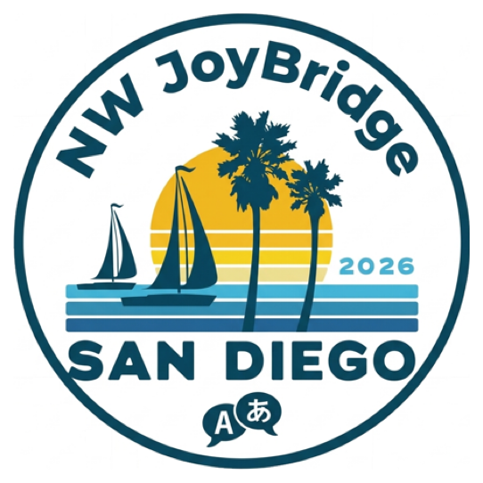
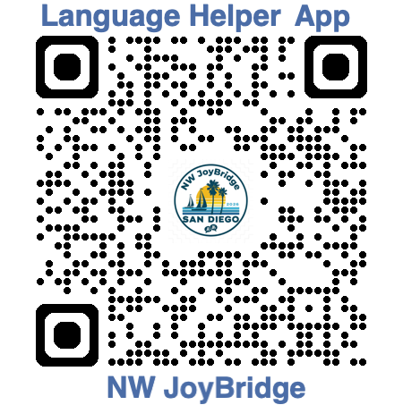

⛵Welcome, Dear International Delegates!
We open our hearts and extend our arms in warm Christian love as we welcome you to the “2026 Eternal Happiness” International Convention. Whether you have traveled across oceans or continents, we rejoice to have you with us in sunny San Diego! We are happy you are here!
“Happy are your eyes because they see and your ears because they hear.”
— Matthew 13:16
Welcome to the San Diego “Eternal Happiness”
International Convention! (Isaiah 26:7)
Welcome International Candidates Video
Welcome International Candidates video.
Convention Venue
San Diego Convention Center
Nov 27–29, 2026
The San Diego Convention Center is the official gathering place for the “Eternal Happiness” International Convention of Jehovah's Witnesses, taking place November 27 thru 29, 2026.
Share the NW JoyBridge App with others
Easy QR Code & Web Link Access
Show this QR Code to others and have them use their camera or QR Scanner App to Scan this QR Code.

Tap or click the QR Code to open the full-screen imageOr they can point their web browser to:
https://syberman2k.github.io/JoyBridgeWelcome to San Diego, International Delegates! Video
Scan QR Code or Tap to Watch the Welcome Video
Scan this QR Code with your phone camera or tap the QR Code below to watch the “Welcome to San Diego, International Delegates!” video.
Choose a Language
Select a delegate's language to begin communicating